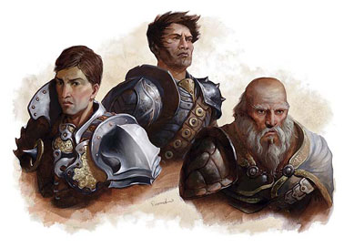

Moyen Âge
Quelques infos sur la vie au Moyen Âge, pour mettre un peu d'ambiance.
Repères temporels
NOTE
Il existe historiquement plusieurs définitions, dû par exemple au fait que ce n'est qu'au Vème siècle que Prime fut ajouté, et à des définitions différentes en Orient et en Occident.
Le jour est découpé en 8 périodes, chacune débutant par un office religieux (prières).
- Matines : office de la nuit (Minuit)
- Laudes : office de l'aube (3h)
- Prime : office de l'aurore (6h)
- Tierce : office de la 3ème heure (9h)
- Sexte : office de la 6ème heure (12h)
- None : office de la 9ème heure (15h)
- Vêpres : office du soir (18h)
- Complies : office du retour au calme (21h), le coucher du soleil
Alimentation
ANACHRONISMES
La fourchette n'existe pas. On se sert avec les doigts et à l'aide d'une cuillère et d'un couteau. De même, la pomme de terre, la tomate et les haricots verts n'ont pas encore été découverts au Moyen Âge (les 3 proviennent d'Amérique du Sud).
Le pain est, avec les fromages, les racines et les fruits, la base de la nourriture paysanne. Il est fabriqué à partir de farines de seigle, d'avoine ou d'orge, plutôt que de blé. De grosses tranches épaisses, un peu rassies, servent d'assiettes.
Les fruits dépendent de la région et de la saison : on mange des pommes, des prunes, des raisins et des poires (d'un jardin) ainsi que des fraises, des framboises et des mûres (cueillies sauvages en forêts). Côté légumes, on consomme des racines (carottes, navets, betteraves, salsifis), des féculents (pois, haricots, fèves) et des légumes verts (choux, salades, bettes, cardons, épinards). Le riz, arrivé d'orient, n'est véritablement donné qu'aux malades.
La viande la plus courante est le porc et ses dérivés en charcuterie : jambons, saucisses, saucissons, pâtés, lard. Les nobles se réservent le gros gibier (sanglier, cerf, chevreuil), cuit à la broche, et la grosse volaille (poularde, oie, dinde, canard) alors que le peuple se contente de lièvres et de lapins, ainsi que de perdrix, de pigeons, de bécasses, de cailles et autres petits oiseaux, le tout plutôt préparé en ragoût ou en pâté. La poule, la vache et le mouton ne sont servis qu'occasionnellement car on préfère garder ces animaux pour les oeufs, le lait et la laine. Le boeuf est l'animal de trait le plus répandu, il est donc lui aussi peu servi à table. Le poisson est surtout consommé salé et séché.
La boisson principale est le vin, l'eau étant souvent contaminée. Mais, acide, il est toutefois souvent coupé avec de l'eau. La bière et le cidre sont aussi très appréciés.
La natalité au Moyen Âge
Au Moyen Âge, les familles se faisaient très tôt. Les filles se mariaient entre 16 et 18 ans pour la plupart, et les garçons entre 22 et 25 ans. Les couples avaient donc leurs premiers rejetons à cet âge et souvent près d'une dizaine (et même plus) d'enfants au total. Mais la mortalité infantile étant très élevée (manque de soins, hygiène défaillante, confort absent, sévérité du quotidien...), il n'en restait généralement que quatre ou cinq de "fiables".
L'espérance de vie, à l'époque, peut être située entre 50 et 60 ans pour les personnes qui avaient la chance de survivre durant les dix premières années (si l'on calcule l'espérance de vie d'une manière normale, c-a-d en prenant en compte toutes les naissances, la moyenne tombe entre 35 à 40 ans). La moitié des femmes étaient veuves à cinquante ans.
Échelle des titres
- Roi
- Prince
- Duc
- Marquis
- Comte
- Vicomte
- Baron
- Chevalier
Écrit par blueace